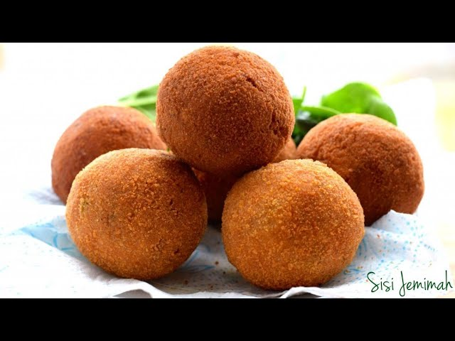

Crunchy Scotch Eggs

A Crunchy scotch egg is best paired with Chapman mocktail on a sunny day!
This is the most sought after snack in Nigeria.
What a delight to indulge in this masterpiece, work of art by Aunty Mina.
Ingredients
- 500g Minced Sausage
- 1000g of Flour
- 500g Margarine
- 1 big bulb of Onion
- All purpose seasoning to taste
- 3 scotch bonnet peppers for flame
- Salt to taste
Recipes Instructions
- Mix all dry Ingredients
- Add all wet ingredients to its dry components
- Mix Dough untill flakky
- Add the Margarine and mix dough thoroughly
- Roll dough around cooled hard boild eggs
- Lay each roll on baking tray and preheat oven at 400F
- Bake rolls for 30mins or until brown
Allow to cool and serve with chilled Chapman
Bon Apetite!!! Life is Good!
Return to top
Return to Main Page